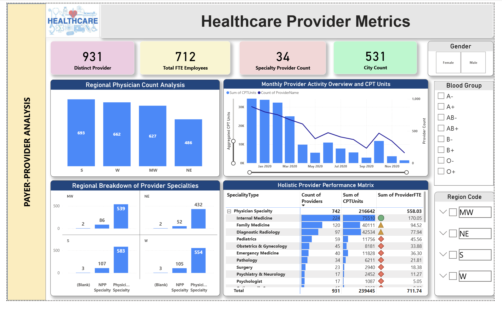
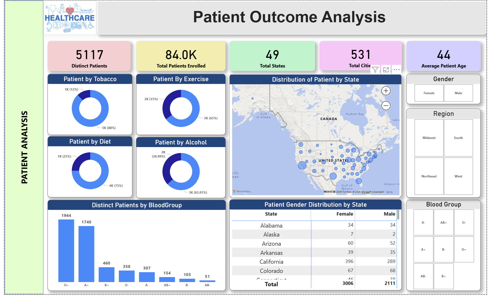
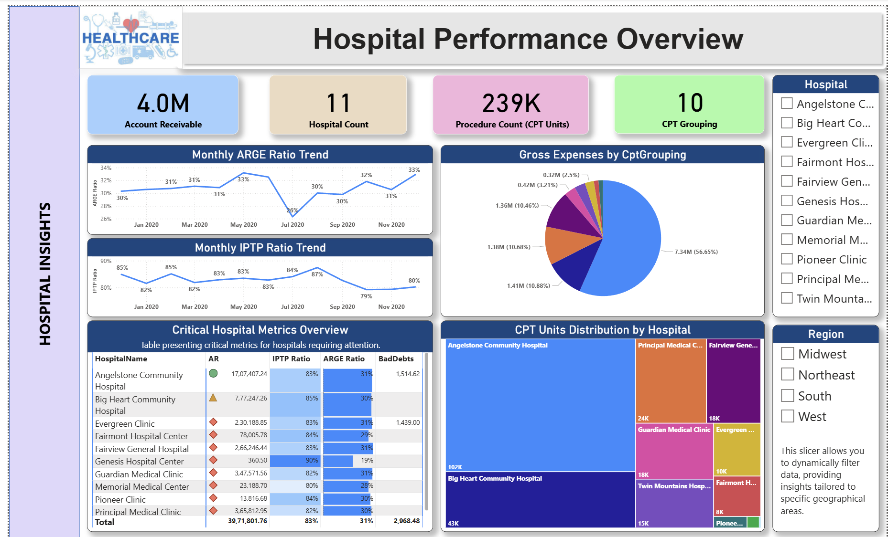
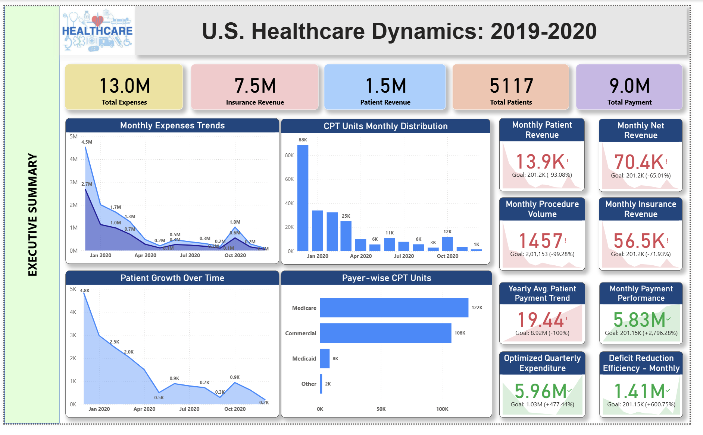

Comprehensive financial analysis examining 100,000+ patient records across US states for cost optimization, financial deficit reduction, insurance recovery enhancement, and strategic financial planning.
This healthcare financial analysis examines patient encounters to identify cost optimization opportunities and strategic financial planning for healthcare institutions.
• Geographic Coverage: Multi-state analysis focused on California, Texas, and Florida.
• Temporal Analysis: 6-month trend analysis with month-over-month performance metrics.
• Demographic Segmentation: Gender-based insurance coverage analysis and usage patterns.
• Financial Metrics: Comprehensive cost, recovery, and deficit tracking.
• Scenario Modeling: What-if analysis for cost escalation impact assessment.
| Financial Component | Amount (₹ Cr) | Percentage | Status |
|---|---|---|---|
| Total Gross Expense | 120.00 | 100.0% | 📊 Baseline Operational Cost |
| - Insurance Coverage | 80.00 | 66.7% | ✅ Highest Recovery Source |
| - Patient Contributions | 25.00 | 20.8% | ⚠️ Declining Direct Trend |
| = Net Deficit Gap | 15.00 | 12.5% | ❌ Critical Financial Risk |
While recovering 87.5% of gross expenses through insurance and patient payments, a ₹15 Cr deficit (12.5%) emerges from non-covered services, unpaid claims, and administrative write-offs requiring immediate intervention.
Insurance is the primary revenue source, covering ~2/3 of all operational costs (₹80 Cr). Creates high payer negotiation dependency.
Direct patient contributions account for 1/5 of costs (₹25 Cr). Recent 12% decline indicates worsening patient payment capacity.
The uncovered gap (₹15 Cr) represents critical risk, stemming from claim denials, bad debt, and non-reimbursable procedures.

| Period | Insurance Pay (₹ Cr) | Patient Pay (₹ Cr) | Monthly Deficit (₹ Cr) | Trend Status |
|---|---|---|---|---|
| January | 40 | 25 | 10 | 📍 Baseline Reference |
| February | 40 | 24 | 11 | ↑ +10% Deficit Increase |
| March | 40 | 23 | 12 | ↑ +20% Deficit Increase |
| April | 40 | 21 | 14 | ↑ +40% Deficit Increase |
| May | 40 | 20 | 15 | ↑ +50% Deficit Increase |
| June | 40 | 20 | 16 | ↑ +60% Deficit Increase |
Patient payments declined by 12% over 6 months (from ₹25 Cr to ₹20 Cr) while insurance payouts remained flat (₹40 Cr/mo). This dual pressure expanded the monthly deficit by 60% (from ₹10 Cr to ₹16 Cr).

• Higher insurance enrollment rates.
• 15% better coverage than male cohort.
• Lower patient cost-sharing burden.
• Improved plan engagement & adherence metrics.
• Lower insurance penetration rate.
• Higher out-of-pocket expense ratios.
• Greater payment delinquency risk.
• Lower preventive care utilization & acute drivers.
| State | Gross Expense | Insurance Recovery | Patient Recovery | Deficit | Recovery Rate |
|---|---|---|---|---|---|
| California | ₹30 Cr | ₹21 Cr (70%) | ₹7.5 Cr (25%) | ₹1.5 Cr (5%) | ✅ 95% Top Recovery |
| Texas | ₹22 Cr | ₹14.5 Cr (66%) | ₹4.5 Cr (20%) | ₹3 Cr (14%) | ⚠️ 86% Mid Recovery |
| Florida | ₹20 Cr | ₹13 Cr (65%) | ₹4 Cr (20%) | ₹3 Cr (15%) | ⚠️ 85% Low Recovery |
Facility operations, staffing, utilities, and infrastructure. Largest cost component.
Diagnostics, medications, procedures, and professional fees. Subject to denial variances.

Financial Recovery % = (Insurance Pay + Patient Pay) / Gross Expense × 100
= (₹80 Cr + ₹25 Cr) / ₹120 Cr × 100 = 87.5%
Deficit Percentage = (Gross Expense - Insurance Pay - Patient Pay) / Gross Expense × 100
= (₹120 Cr - ₹80 Cr - ₹25 Cr) / ₹120 Cr × 100 = 12.5%
Insurance Ratio = Insurance Pay / Gross Expense = ₹80 Cr / ₹120 Cr = 66.7%
Patient Ratio = Patient Pay / Gross Expense = ₹25 Cr / ₹120 Cr = 20.8%Assumptions: Healthcare costs increase 10% (Gross = ₹132 Cr). Insurance payout scales proportionally (₹88 Cr). Patient payout scales proportionally (₹27.5 Cr).
Projected Deficit: ₹132 Cr - ₹88 Cr - ₹27.5 Cr = ₹16.5 Cr (+₹1.5 Cr deterioration). Without proportional payout scaling, deficit reaches ₹17–18 Cr.
Patient encounters, claims, payments, 6-month calendar, state heatmaps, DAX measures.
4 primary KPI cards, time series lines, demographic pie charts, state recovery heatmaps.
Total reconciliation, date range verification, zero duplicates, <0.5% outliers.
Renegotiate contracts for +5-8% rate hike in TX & FL. Benchmark against CA's 95% rate.
Impact: +₹4–6.4 Cr
Reverse 12% decline via 0% payment plans, 5% early discounts, & hardship care.
Impact: +₹0.75–1.25 Cr
Target 5-10% operational savings via vendor consolidation & lean workflows.
Impact: +₹6–8 Cr
Implement daily KPI alerts & weekly scorecards for early deficit detection.
Impact: +₹1.5–2 Cr
Narrow 15% male coverage gap with employer health programs.
Impact: +₹1.5–2.5 Cr
Apply California best practices to Texas & Florida operations.
Impact: +₹3–4 Cr
| Initiative Focus | Impact Amount | Recovery % Increase | Timeline |
|---|---|---|---|
| Payer Negotiation & Pricing | ₹4.00 – 6.00 Cr | +3.3% – 5.0% | 6 – 9 months |
| Patient Payment Optimization | ₹1.00 – 1.25 Cr | +0.8% – 1.0% | 3 – 6 months |
| Operational Cost Control | ₹6.00 – 8.00 Cr | +5.0% – 6.7% | 9 – 12 months |
| TOTAL COMBINED IMPACT | ₹17.00 – 23.75 Cr | +14.0% – 20.0% | 12 – 18 months |
Comprehensive execution of all 6 initiatives recovers the full ₹15 Cr deficit and generates ₹2–8.75 Cr in net margin. Target metrics: 95%+ recovery rate, <2% deficit, and narrowing geographic gap to 1–2%.